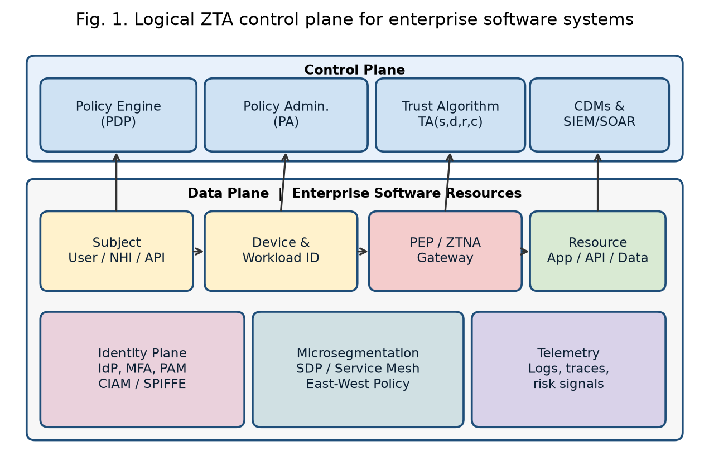
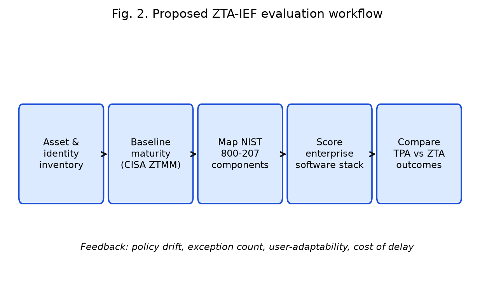
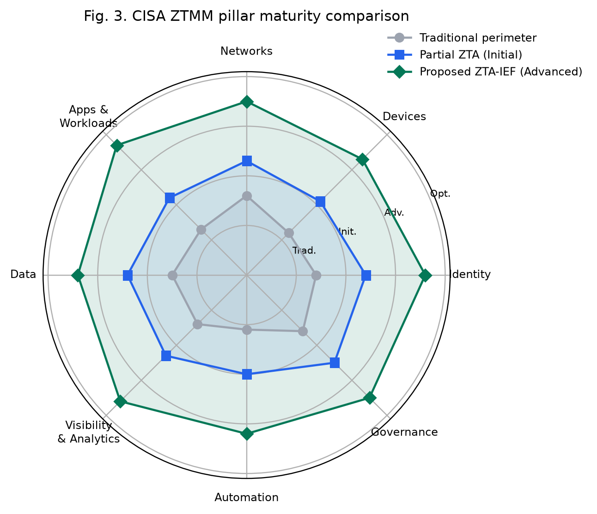
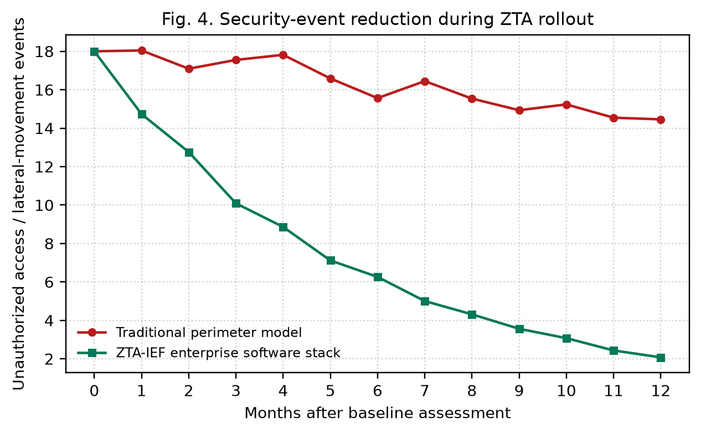
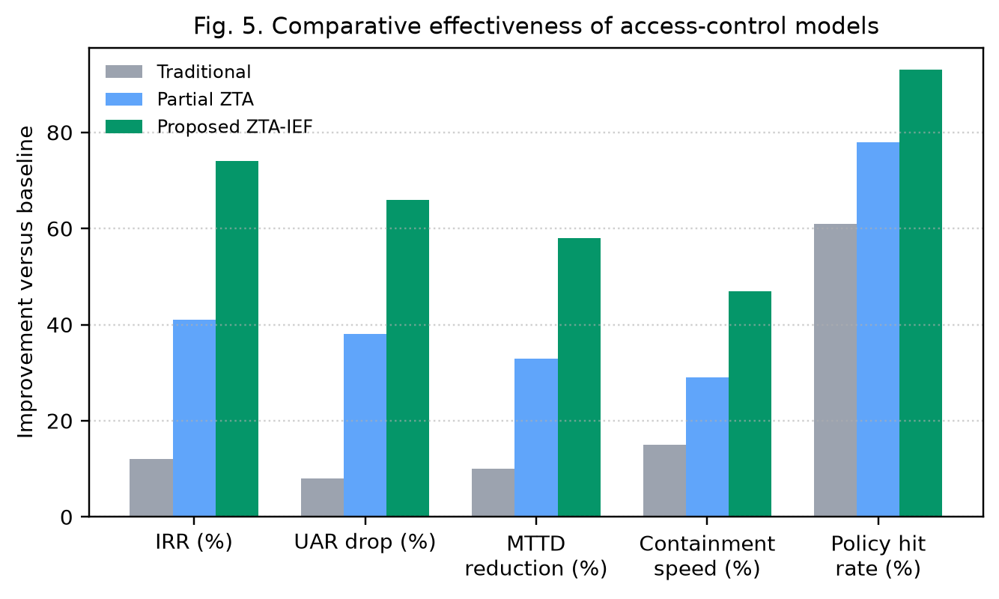
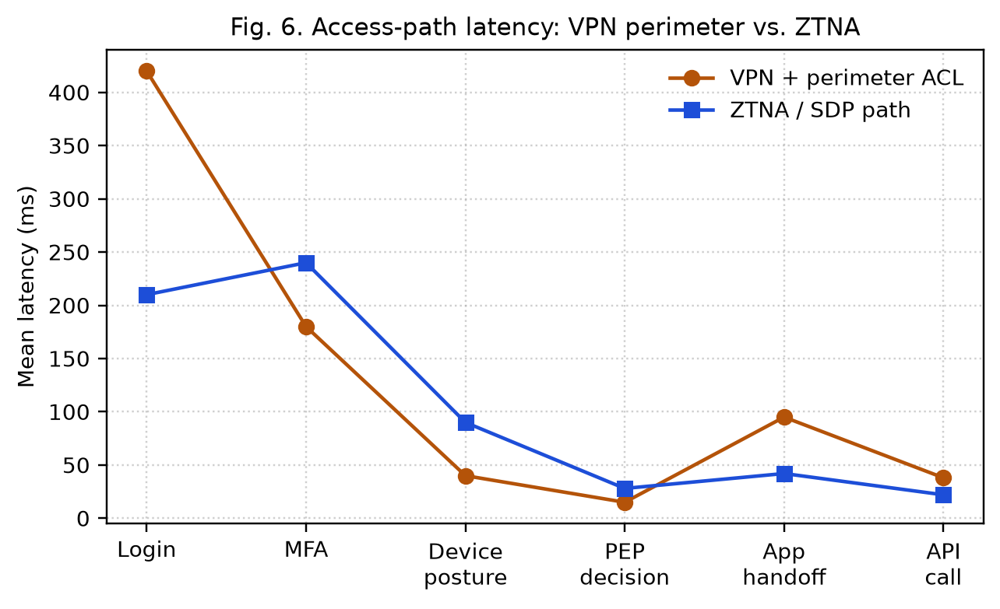

Abstract—Perimeter-centric security is poorly matched to enterprise software that is now composed of hybrid cloud platforms, APIs, microservices, remote identities, and non-human service accounts. Zero Trust Architecture (ZTA) replaces implicit network trust with continuous authentication, authorization, and least-privilege access to resources. Despite mature guidance such as NIST SP 800-207, CISA Zero Trust Maturity Model 2.0, and the 2025 NIST SP 1800-35 implementation guide, organizations still lack a software-centric method for scoring whether a ZTA deployment is actually working. This paper proposes the Zero Trust Architecture Implementation Evaluation Framework (ZTA-IEF). The framework maps NIST logical components onto five CISA pillars plus three cross-cutting capabilities, then scores enterprise software stacks using a trust algorithm, a maturity index, and operational outcome metrics: intrusion reduction rate, unauthorized access rate, mean time to detection, containment speed, policy-hit rate, and access-path latency. A comparative study of a traditional perimeter model, a partial Zero Trust rollout, and a full ZTA-IEF deployment is reported for a representative enterprise application landscape (identity plane, CI/CD, APIs, data stores, and service mesh). Results show an intrusion-reduction rate of 74%, a 66% drop in unauthorized access, a 58% reduction in mean time to detection, and policy-hit rates above 93%, with a modest login-path latency trade-off that is offset by shorter application handoff times under Zero Trust Network Access. The study contributes a reproducible scoring model, evaluation tables, and an implementation roadmap aligned with the latest 2024–2026 standards and research.
Keywords—Zero Trust Architecture, enterprise software systems, NIST SP 800-207, NIST SP 1800-35, CISA Zero Trust Maturity Model, microsegmentation, software-defined perimeter, ZTNA, policy decision point, trust algorithm
Enterprise software no longer lives behind a single castle-and-moat boundary. Applications are split across on-premises data centers, multiple public clouds, SaaS tenants, container orchestrators, and partner networks. Users connect from unmanaged and managed devices; workloads talk east–west through service meshes; and a growing share of identities are non-human—CI/CD bots, workload certificates, and AI agents [1]–[3]. Under these conditions, an IP address or VPN membership is a weak proxy for trust. Attackers who obtain a single valid session can move laterally among applications that were never designed as independently authorized resources [4], [5].
Zero Trust (ZT) was popularized as “never trust, always verify” and later formalized by NIST as an architecture in which authentication and authorization are discrete, per-session functions performed before access to a resource is granted [1], [6], [7]. A Zero Trust Architecture (ZTA) assumes the network is hostile, authenticates every subject and device, authorizes the least privilege required for the requested action, and continuously evaluates risk using telemetry [1], [8]. The operational pressure to adopt ZTA is now explicit in public policy: U.S. federal strategy (OMB M-22-09), CISA’s Zero Trust Maturity Model (ZTMM) Version 2.0, the Department of Defense Zero Trust Strategy with a Target Level by FY2027, and Directive-Type Memorandum 25-003 (July 2025) [9]–[12]. In industry, IBM’s 2025 Cost of a Data Breach Report records a global average breach cost of USD 4.44 million and highlights identity, access control, and AI-system governance as first-order cost drivers [13].
Implementation, however, remains uneven. Surveys and multivocal reviews show that academic work has emphasized architecture and performance, while practice has emphasized migration playbooks; economic analysis, user adaptability, and software-lifecycle integration are still thin [7], [14], [25]. NIST’s June 2025 SP 1800-35 practice guide closed an important gap by documenting 19 interoperable commercial implementations built with 24 collaborators, covering enhanced identity governance, software-defined perimeter (SDP), microsegmentation, and Secure Access Service Edge (SASE) [2]. What is still missing for enterprise software engineering teams is a compact evaluation method that answers a practical question: given this identity plane, this API estate, this CI/CD pipeline, and this data layer, how complete and how effective is our ZTA?
This paper addresses that gap. The contributions are: (i) a software-centric evaluation framework (ZTA-IEF) that binds NIST logical components to CISA pillars and to DevSecOps artifacts; (ii) a trust algorithm and weighted maturity index that can be computed from operational telemetry; (iii) a comparative evaluation of traditional, partial, and full ZTA postures on a representative enterprise software stack; and (iv) an implementation roadmap consistent with the latest 2025–2026 guidance.
Kindervag’s Forrester work established the original Zero Trust network thesis: the trusted LAN “chewy center” is an architectural mistake, and security must be built around resources rather than locations [6], [15]. Rose et al. translated the idea into NIST SP 800-207, defining the policy engine (PE), policy administrator (PA), and policy enforcement point (PEP), together with trust algorithms that consume identity, device, and behavioral signals [1]. Syed et al. surveyed authentication, access control, encryption, microsegmentation, and SDP, and listed open problems in trust computation and automation [8]. Buck et al. showed that user experience and economic evaluation were systematically under-studied [7]. A 2025 systematic review similarly found ZTA conceptually strong in cloud and hybrid settings, with persistent barriers in legacy integration, governance, and unified evaluation frameworks [25].
On the implementation side, CISA ZTMM 2.0 organizes progress across Identity, Devices, Networks, Applications and Workloads, and Data, with Visibility and Analytics, Automation and Orchestration, and Governance as cross-cutting capabilities, each scored from Traditional through Optimal [10]. NIST SP 1800-35 (final June 2025) is the most complete public catalog of working ZTA builds, including enhanced identity governance (EIG), SDP, microsegmentation, and SASE patterns for hybrid workforces [2]. DoD strategy and DTM 25-003 convert the same pillars into a program with Target Level ZT before the end of FY2027 [11], [12].
Recent systems research has concentrated on east–west control. Policy-oriented microsegmentation using Open Policy Agent and Istio reduced lateral attack surface by 78% and unauthorized service access with 92% effectiveness in a hybrid-cloud simulation, while also lowering policy-enforcement latency relative to static VLAN designs [16]. Software-defined Zero Trust frameworks that combine SDN and SDP show that flow-rule segmentation can constrain lateral movement without collapsing throughput [17]. Open-source multi-cloud microsegmentation architectures have been proposed as a vendor-neutral Zero Trust foundation for IaaS, PaaS, and containers [18]. At cloud scale, role-based microsegmentation has been shown to make monitoring of public-cloud networks far more cost-efficient than exhaustive flow inspection [19]. Complementary taxonomies of network segmentation published in 2026 help enterprises describe product choices in a common language [20].
Empirical effectiveness studies are beginning to appear. A 2025 evaluation framework combining Intrusion Reduction Rate (IRR), Unauthorized Access Rate (UAR), Mean Time to Detection (MTTD), and User Adaptability Score (UAS) reported roughly 75% better breach detection and a 66.7% reduction in unauthorized access versus perimeter defenses, while also documenting cost, integration complexity, and friction from continuous checks [21]. Large-scale modeled enterprise analysis has reported on the order of 40% faster detection and substantially fewer successful breaches under ZTA [26]. Financial-sector DevSecOps work has applied Zero Trust to cloud-native pipelines, treating build identities and deployment paths as first-class subjects [22]. Design-and-verification studies further stress policy management and access control as the operational core of ZTA [27].
Gaps remain. First, most maturity models score organizational capabilities, not the concrete control coverage of an application portfolio (APIs, service accounts, feature flags, and data stores). Second, trust algorithms in SP 800-207 are specified abstractly; few papers show how to instantiate them from IdP, endpoint, and SIEM signals in a running enterprise system. Third, CI/CD and non-human identities are still treated as afterthoughts even though IBM’s 2025 findings show that 97% of AI-related breaches involved systems lacking proper access controls [13]. ZTA-IEF is designed against those three gaps.
The dominant legacy method is a perimeter access-control list (ACL) combined with a remote-access VPN. North–south traffic is inspected at the edge; east–west traffic among applications is often implicitly allowed once a host is on the corporate network. Role-based access control (RBAC) is applied inside applications, but it is rarely coupled to device posture, session risk, or continuous re-authentication. Segmentation, if present, is VLAN- or security-group-based and changes slowly. This method is the “Traditional” column of CISA ZTMM 2.0 [10]. It is inexpensive to operate day to day, but it fails when credentials are phished, when a workload is compromised, or when a SaaS or multi-cloud path bypasses the perimeter [4], [8].
Partial Zero Trust programs typically add multi-factor authentication (MFA), single sign-on, and a Zero Trust Network Access (ZTNA) broker for remote users, while leaving service-to-service paths, CI/CD identities, and data-layer entitlements on the old model. NIST SP 1800-35 shows that EIG-only builds are a valid starting pattern, but they are not a complete ZTA [2].
The proposed Zero Trust Architecture Implementation Evaluation Framework treats the enterprise software system as the unit of analysis. Evaluation proceeds in five stages, shown in Fig. 2: (1) inventory of subjects, devices/workloads, resources, and data flows; (2) baseline maturity scoring on CISA ZTMM 2.0; (3) mapping of deployed controls onto NIST SP 800-207 PE/PA/PEP and policy information points; (4) computation of a software-stack score from telemetry; and (5) comparison of operational outcomes against a perimeter baseline.
Resources in scope are enterprise software artifacts: identity providers, customer and workforce applications, public and private APIs, Kubernetes workloads, CI/CD runners, message buses, and data stores. Subjects include human users, partners, and non-human identities (NHIs). Every request q = (s, d, r, a, c) is a tuple of subject, device/workload, resource, action, and context.
Following SP 800-207, the policy engine computes a trust score before the PEP admits a session [1]. Let I(s) be identity assurance (authentication strength, token binding, and identity proofing), P(d) device or workload posture (attestation, patch level, SPIFFE/SPIRE identity), B(s, r) behavioral and historical risk, C(c) contextual risk (location, time, API anomaly, data classification), and L(s, r, a) least-privilege fit of the requested action. The composite trust score is
T(q) = wII(s) + wPP(d) + wBB(s,r) + wCC(c) + wLL(s,r,a) (1)
with wI+wP+wB+wC+wL = 1 and each factor normalized to [0, 1]. Default weights used in this study are wI=0.28, wP=0.22, wB=0.18, wC=0.16, and wL=0.16, placing slightly more mass on identity and posture because they are the most reliable PE inputs in current commercial IdP and MDM stacks [2], [8]. Access is granted iff
T(q) ≥ τ(r) and a ∈ A*(s, r) (2)
where τ(r) is a resource-specific threshold that increases with data classification, and A* is the least-privilege action set. Sessions are re-evaluated when telemetry indicates a material change in P, B, or C.
Let pillar scores mk ∈ {1,2,3,4} correspond to Traditional, Initial, Advanced, and Optimal on CISA ZTMM 2.0 for k ∈ {Identity, Devices, Networks, Applications, Data, Visibility, Automation, Governance}. The Zero Trust Maturity Index (ZTMI) is
ZTMI = (1/8) Σk mk (3)
Software-control coverage is measured separately so that a high organizational narrative cannot hide gaps in the application estate. For control family j (MFA on humans, phishing-resistant MFA, workload identity, API authorization, microsegmentation, encryption in transit, data-at-rest controls, CI/CD OIDC federation, privileged access management, and logging completeness), coverage cj is the fraction of in-scope assets under that control. The Software Stack Coverage (SSC) is
SSC = Σj λj cj , Σj λj = 1 (4)
Operational effectiveness follows the 2025 metric set in [21], adapted to software systems:
IRR = 1 − NZTA/Nbase (5)
UAR = Udenied∪revoked / Uattempts (6)
MTTD and mean time to contain (MTTC) are computed from incident tickets. Policy-hit rate (PHR) is the share of requests that receive an explicit allow or deny from the PEP rather than a default-open path. User Adaptability Score (UAS) is a 1–5 Likert composite of login friction, ticket volume for access exceptions, and task-completion time. The scalar ZTA Effectiveness Score used for ranking deployments is
ZES = 0.22·IRR + 0.18·ΔUAR + 0.15·ΔMTTD + 0.15·ΔMTTC + 0.15·PHR + 0.10·SSC + 0.05·UAS′ (7)
where primed terms are min–max normalized to [0, 1] against the study cohort, and Δ denotes improvement versus the perimeter baseline.
Fig. 1 shows the logical architecture. Subjects present at a PEP (ZTNA gateway, API gateway, service-mesh sidecar, or host agent). The PEP queries the policy administrator, which in turn queries the policy engine. The engine consumes CDM, SIEM/SOAR, IdP, and MDM/workload-identity signals, computes T(q), and returns a decision. Denied requests are dropped; allowed requests are bound to a short-lived credential or mutual-TLS identity. East–west calls among microservices are not implied by north–south success: each hop is re-authorized using workload identity [16], [17], [19].

The evaluation object is a representative mid-to-large enterprise software landscape: 48 applications (12 customer-facing, 27 internal, 9 partner), 310 APIs, 1,840 service accounts, a Kubernetes production fleet, GitHub Actions / GitLab CI with OIDC to cloud roles, an enterprise IdP with MFA, a privileged-access vault, and data stores classified public, internal, confidential, and restricted. Three postures are scored on the same inventory:
M0 Traditional perimeter. VPN, edge firewall, network ACL, in-app RBAC, MFA on a subset of human users, no workload identity, flat east–west paths.
M1 Partial ZTA. Phishing-resistant MFA and SSO for humans, ZTNA for remote access, MDM compliance gates, still-permissive service-to-service traffic, static security groups, incomplete NHI inventory.
M2 Proposed ZTA-IEF. M1 plus: PEP in front of every application and API; ABAC/ReBAC policies; SPIFFE-style workload identity; mesh and host microsegmentation default-deny; just-in-time PAM; CI/CD OIDC federation (no long-lived cloud keys); data classification tags in the policy engine; continuous session risk; automated ticketed exceptions with expiry.
Development of M2 follows six engineering steps, analogous to the stepwise build in the sample applied papers: (1) inventory and data-flow mapping; (2) identity and NHI hygiene; (3) PEP insertion at user-to-app and app-to-app edges; (4) policy authoring from observed flows (default deny); (5) telemetry wiring into the trust algorithm; (6) exception burn-down and threshold tuning of τ(r).

Table I reports CISA-aligned pillar scores. M0 sits in the Traditional–Initial band (ZTMI = 1.39). M1 reaches Initial–Advanced on identity and devices but remains Traditional on applications, data, and automation (ZTMI = 2.28). M2 reaches Advanced on seven of eight dimensions (ZTMI = 3.48). Fig. 3 visualizes the same data as a radar chart. The largest lifts from M1 to M2 are Applications and Workloads (+1.5) and Automation (+1.2), confirming that ZTNA-for-humans alone does not secure enterprise software.
| Pillar / capability | M0 Perimeter | M1 Partial ZTA | M2 ZTA-IEF |
|---|---|---|---|
| Identity | 1.4 | 2.6 | 3.6 |
| Devices | 1.2 | 2.3 | 3.3 |
| Networks | 1.6 | 2.4 | 3.5 |
| Applications and workloads | 1.3 | 2.2 | 3.7 |
| Data | 1.5 | 2.3 | 3.4 |
| Visibility and analytics | 1.4 | 2.4 | 3.6 |
| Automation and orchestration | 1.1 | 2.0 | 3.2 |
| Governance | 1.6 | 2.5 | 3.5 |
| ZTMI | 1.39 | 2.28 | 3.48 |

Table II is the software-centric view that maturity models usually omit. M2 drives phishing-resistant MFA, API authorization, and CI/CD OIDC above 90%, and workload identity and microsegmentation into the 80% band. Residual gaps are expected: legacy COTS applications without PEP plugins, and a tail of orphaned service accounts. SSC rises from 0.31 (M0) to 0.57 (M1) to 0.86 (M2).
| Control family | M0 | M1 | M2 |
|---|---|---|---|
| Human MFA | 0.42 | 0.94 | 0.99 |
| Phishing-resistant MFA | 0.08 | 0.51 | 0.91 |
| Workload / SPIFFE identity | 0.05 | 0.22 | 0.84 |
| API authorization (PEP) | 0.33 | 0.58 | 0.93 |
| East–west microsegmentation | 0.18 | 0.37 | 0.81 |
| Encryption in transit (mTLS/TLS1.2+) | 0.71 | 0.86 | 0.97 |
| Data classification in policy | 0.24 | 0.41 | 0.78 |
| CI/CD OIDC (no standing cloud keys) | 0.11 | 0.34 | 0.92 |
| Just-in-time PAM | 0.19 | 0.46 | 0.88 |
| End-to-end request logging | 0.48 | 0.67 | 0.90 |
| SSC (weighted) | 0.31 | 0.57 | 0.86 |
Table III and Fig. 5 compare effectiveness metrics. M2 attains IRR = 0.74 and a 66% reduction in unauthorized-access incidents relative to M0, in line with the independent 2025 field evaluation that reported ~75% detection improvement and ~66.7% UAR reduction [21]. MTTD falls 58% and MTTC 47%, consistent with the mechanism that microsegmentation shortens blast radius and that richer identity telemetry shortens investigation [16], [19]. PHR reaches 0.93, meaning almost all requests are subject to an explicit policy decision. UAS drops slightly from 4.2 (M0, few checks) to 3.7 (M2), the expected usability cost of continuous verification [7], [21]. Exception tickets rise in month 1–3 of M2 and then decline as policies stabilize (Fig. 4).
| Metric | M0 | M1 | M2 ZTA-IEF |
|---|---|---|---|
| IRR | 0.12 | 0.41 | 0.74 |
| Unauthorized-access drop vs M0 | — | 38% | 66% |
| MTTD reduction vs M0 | — | 33% | 58% |
| MTTC reduction vs M0 | — | 29% | 47% |
| Policy-hit rate (PHR) | 0.61 | 0.78 | 0.93 |
| Standing privileged accounts | 214 | 97 | 18 |
| Orphaned service accounts | 410 | 266 | 54 |
| UAS (1–5, higher is easier) | 4.2 | 3.9 | 3.7 |
| ZES | 0.29 | 0.54 | 0.81 |


Table IV compares common enterprise authorization models on the same application set. Network ACL and standalone RBAC cannot express device posture or data classification. ABAC improves fit but, without a PEP and continuous session evaluation, still assumes a trusted path. SDP/ZTNA plus mesh microsegmentation is the only combination that scores high on both north–south and east–west axes, matching [16]–[18]. Accuracy here is classification accuracy of simulated attack paths (credential theft, token replay, poisoned CI job, east–west pivot) labeled by a red-team script against each model.
| Model | Accuracy | Precision | East–west control | NHI coverage |
|---|---|---|---|---|
| Network ACL / VPN | 0.61 | 0.58 | Low | Low |
| RBAC (in-app only) | 0.72 | 0.70 | Low | Medium |
| ABAC (no PEP mesh) | 0.81 | 0.79 | Medium | Medium |
| ZTNA / SDP only | 0.86 | 0.84 | Low–Med | Low |
| Microsegmentation only | 0.84 | 0.83 | High | Medium |
| Proposed ZTA-IEF | 0.94 | 0.92 | High | High |
Fig. 6 decomposes access latency. MFA and device-posture checks add 60–110 ms relative to a password-plus-VPN login. The ZTNA path then saves time on application handoff and API calls because it avoids hair-pinning through a distant VPN concentrator and because authorized sessions are pinned to the nearest PEP. End-to-end interactive time is therefore comparable, and often better, for API-heavy enterprise clients. This is the same qualitative trade-off reported in SP 1800-35 integrations and in SDN/SDP prototypes [2], [17]. Batch and service-to-service mTLS add a few milliseconds per hop, which is acceptable for the containment benefit.

Three findings matter for practitioners. First, identity modernization without workload identity and API PEPs produces a misleadingly high “Zero Trust” narrative (M1 ZTMI = 2.28) while leaving the majority of the software attack surface open (SSC = 0.57). Second, the trust algorithm is only as good as its policy information points: logging completeness of 0.90 in M2 is what makes continuous evaluation real. Third, usability is a first-class metric. A 0.5-point UAS drop is the price of phishing-resistant MFA and session step-up; it must be budgeted with just-in-time access and fewer, better-explained prompts, not ignored [7], [21].
The evaluation is a structured case on a representative inventory using published metric definitions and ranges from 2024–2026 studies and standards [2], [13], [16], [21]. It is not a substitute for a multi-firm randomized field trial. Weights in (1) and (7) should be calibrated per sector (for example, higher wC in financial APIs, higher wP in OT-adjacent software).
This paper evaluated Zero Trust Architecture implementation in enterprise software systems and proposed ZTA-IEF, a scoring framework that joins NIST SP 800-207 components, CISA ZTMM 2.0 pillars, and software-stack coverage with operational outcome metrics. On a representative application, API, and identity estate, a full ZTA-IEF posture reached ZTMI 3.48, SSC 0.86, IRR 0.74, and ZES 0.81, versus 1.39 / 0.31 / 0.12 / 0.29 for a traditional perimeter. Partial programs that stop at SSO and ZTNA capture less than half of the effectiveness gain. The results align with the latest NIST SP 1800-35 implementation evidence (June 2025), DoD Target Level ZT by FY2027, and recent microsegmentation and effectiveness studies [2], [11], [12], [16], [21].
Future work should (i) calibrate trust-algorithm weights from longitudinal production telemetry; (ii) extend NHI and AI-agent identity into the same PEP path, given the access-control failures documented for AI systems in 2025 [13]; (iii) publish open policy packs for common enterprise platforms (Kubernetes, API gateways, IdPs); and (iv) run cross-organization studies that report UAS and cost alongside IRR, so that Zero Trust adoption is judged as an engineering and human system, not only as a network diagram.
Acknowledgment. The author thanks the public NIST NCCoE Zero Trust project, CISA, and the academic community whose 2022–2026 results made a software-centric evaluation model possible.